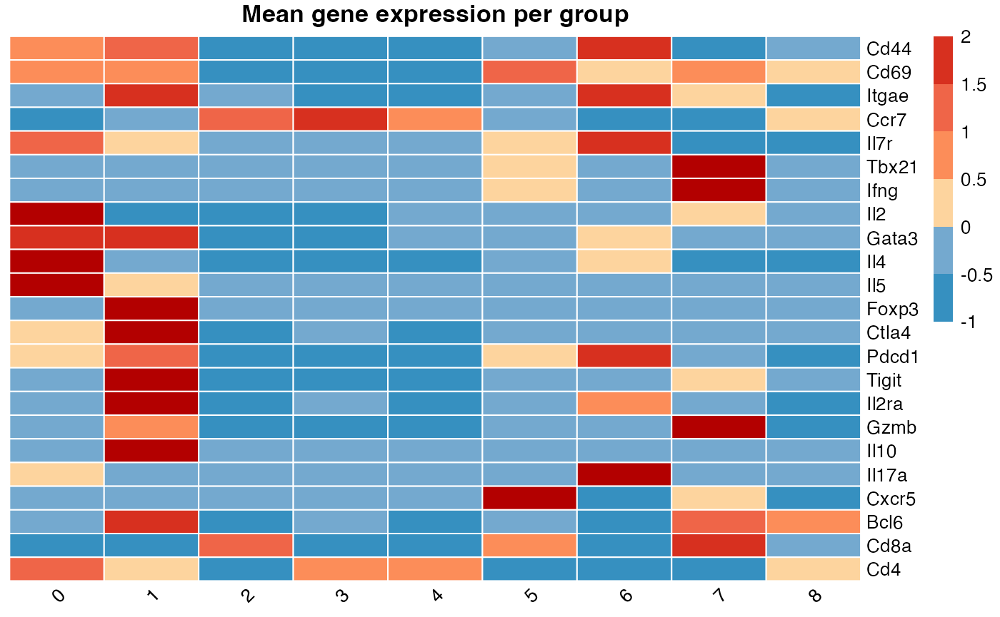
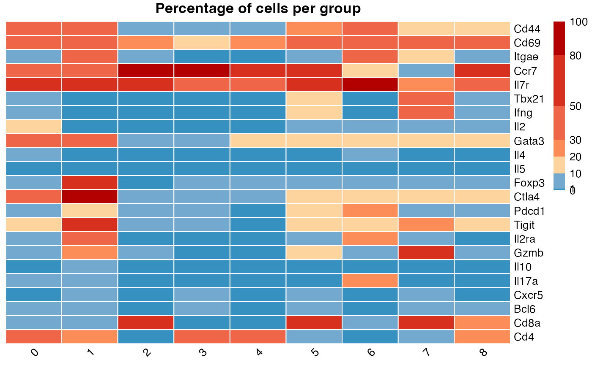

Introduction to czplots
Chenhao Zhou
2025-09-01
Introduction-to-czplots.RmdWelcome to czplots! This R package provides functions
for fast and intuitive analysis of scRNA-seq data. Here, we will go
through a quick tutorial on how to use these functions.
To get started, this package incudes a trimmed test dataset of 2,000 mouse skin T cells downloaded from Zhou et al 2021. we will use this test dataset to demonstate key functions within this package.
First, let’s take a look at the dataset. It includes 9 skin T cell clusters (C0–C8) derived from two mouse groups: K14E7 transgenic mice and wildtype C57BL/6 mice.
skin_tcell@meta.data[1:2,]
#> orig.ident nCount_RNA nFeature_RNA tissue
#> skin_E7g_AAAGCAACACCAGGTC gex_5prime 2690 1114 skin_E7g
#> skin_E7g_AAAGCAATCGCATGGC gex_5prime 2496 1008 skin_E7g
#> percent.mt integrated_snn_res.0.5 seurat_clusters
#> skin_E7g_AAAGCAACACCAGGTC 1.784387 0 0
#> skin_E7g_AAAGCAATCGCATGGC 3.165064 0 0
#> TCR
#> skin_E7g_AAAGCAACACCAGGTC TCR+
#> skin_E7g_AAAGCAATCGCATGGC TCR+
unique(skin_tcell@meta.data$tissue)
#> [1] "skin_E7g" "skin_C57g"
unique(skin_tcell@meta.data$seurat_clusters)
#> [1] 0 8 1 4 7 6 2 3 5
#> Levels: 0 1 2 3 4 5 6 7 8Cell type composition analysis
A common starting point in most analyses is identifying which cell types are enriched in each group, condition, or disease. This package provides a fast and convenient way to calculate the proportion of each cluster within each group and visualize the differences using a bar chart. To use this function, the user must specify two arguments: (1) group and (2) level. Examples are provided below.”
countpercluster(skin_tcell,group="tissue",level<-c("skin_E7g","skin_C57g"))
#> skin_E7g skin_C57g skin_E7g_percent skin_C57g_percent
#> C0 259 147 22.78 17.03
#> C1 262 112 23.04 12.98
#> C2 195 205 17.15 23.75
#> C3 92 191 8.09 22.13
#> C4 135 68 11.87 7.88
#> C5 100 55 8.80 6.37
#> C6 26 39 2.29 4.52
#> C7 47 14 4.13 1.62
#> C8 21 32 1.85 3.71
#> total 1137 863 100.00 100.00Annotation
This function allows users to quickly generate the heatmap plots summarising expression pattern of selected gene markers. Plot 1 shows mean expression of each marker. Plot 2 shows percentage of cells that have non-zero expression of each marker.
annotation_heatmap(skin_tcell,gene=c("Cd44","Cd69","Itgae","Ccr7","Il7r","Tbx21","Ifng","Il2","Gata3","Il4","Il5","Foxp3","Ctla4","Pdcd1","Tigit","Il2ra","Gzmb","Il10","Il17a","Cxcr5","Bcl6","Cd8a","Cd4"),group="seurat_clusters")
